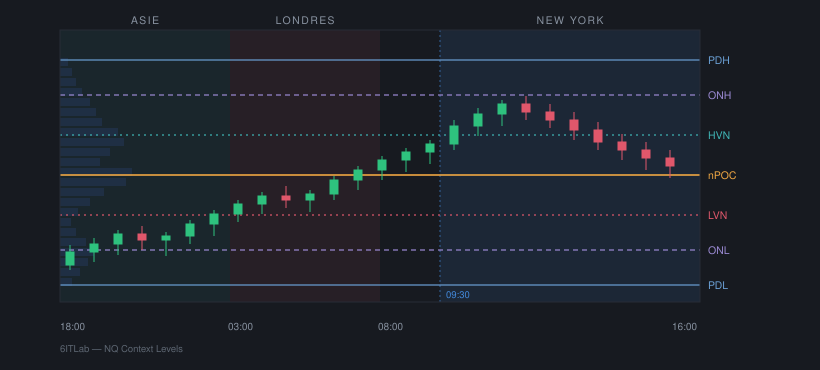

NQ Context Levels
Les niveaux de contexte à surveiller avant l'ouverture, tracés automatiquement et maintenus pendant la séance. Conçu comme complément du Volume Profile & TPO natif, pas comme remplacement.

Le profil composite en filigrane à gauche : les HVN tombent sur ses parties épaisses, les LVN sur ses parties fines.
Ce qu'il trace
| Étiquette | Signification | Fenêtre |
|---|---|---|
PDH / PDL | Haut et bas de la session cash de la veille | 09:30 – 16:00 |
PDC | Clôture de la veille | 16:00 |
ONH / ONL | Extrêmes de la session overnight | 18:00 – 09:30 |
ASIA H/L | Range asiatique | 18:00 – 03:00 |
LDN H/L | Range de Londres | 03:00 – 08:00 |
nPOC | POC de journées antérieures jamais retouchés | multi-jours |
HVN / LVN | Nœuds de haut et faible volume du profil composite | N jours |
Le profil du jour — vPOC, VAH, VAL — n'est
volontairement pas tracé : le Volume Profile & TPO natif d'ATAS
le fait mieux. Les deux indicateurs sont conçus pour cohabiter.
Aucun signal, aucune alerte, aucun ordre. L'indicateur dessine du contexte, la décision reste manuelle.
1. Le décalage horaire, avant tout le reste
Toutes les fenêtres de session sont exprimées en heure de New York. Si les bougies de ton datafeed sont dans un autre fuseau, chaque niveau sera faux — sans aucun message d'erreur. C'est le seul réglage capable d'invalider silencieusement tout le reste.
Réglage dans le groupe ② Fuseau horaire. Deux tests de validation :
Test des extrêmes
PDH et PDL doivent tomber exactement sur le plus haut et le plus bas de la session cash de la veille.
Test des bornes
ONH / ONL cessent d'évoluer pile à l'ouverture du cash, et LDN H/L se figent à 08:00.
Tant que ces deux tests ne passent pas, ne touche à aucun autre réglage.
2. S'aligner sur le Volume Profile & TPO
Les naked POC et les nœuds HVN/LVN sont calculés en interne. Pour qu'ils raisonnent sur la même distribution que ce que tu lis à l'écran, recopie ces réglages depuis l'indicateur natif vers le groupe Profil volume :
| Volume Profile & TPO | NQ Context Levels |
|---|---|
| External period | Étendue du profil (Daily → Journée complète) |
| Profile type | Base de calcul (Volume / Ticks / Time) |
| Prices per row | Taille de bin (ticks) |
3. Lisibilité
Le groupe Affichage a un interrupteur par famille de niveaux. Commence avec la veille et l'overnight seuls, ajoute le reste progressivement — tout activer d'un coup rend le graphique illisible.
Le groupe Textes des étiquettes permet de renommer chaque intitulé. Vider un champ masque l'étiquette sans masquer la ligne : c'est le moyen de désencombrer sans perdre le tracé.
Calage des nœuds HVN / LVN
Seul réglage qui demande du jugement. Garde le profil natif visible à côté : les HVN doivent tomber sur les parties épaisses de son histogramme, les LVN sur les parties fines. Trop de lignes ? Monte le seuil HVN vers 0.80. Les nœuds s'empilent ? Augmente la séparation minimale.
Compiler et installer
cd ~/Documents/Dev/Trading/Atas-x/NqContextLevels
dotnet build -c Release
cp bin/Release/net10.0-windows/NqContextLevels.dll \
~/Library/Application\ Support/ATAS/Indicators/ATAS X surveille ce dossier et recharge automatiquement. En revanche, l'instance déjà posée sur le chart conserve ses anciennes propriétés : supprime-la via la corbeille dans la liste « Added », puis rajoute-la, sinon les nouveaux réglages n'apparaîtront pas.
Limites assumées
- La bougie en formation est exclue du calcul interne : sinon son volume serait compté à chaque tick. Les niveaux dérivés du profil accusent donc un retard d'une bougie. C'est un choix de justesse.
- Dépendance aux données footprint. Sans historique tick suffisant, les naked POC et les nœuds n'apparaîtront pas — les niveaux de session, si. Réduis le nombre de jours du composite pour vérifier.
- Jours fériés et demi-séances non gérés. Une séance écourtée produit un profil calculé sur une plage réduite, sans avertissement.
- Heure d'été ignorée. Le décalage horaire est un entier fixe, à réajuster deux fois par an si ton datafeed est en UTC.
- Détection HVN/LVN heuristique. Maxima et minima locaux sur profil lissé, pas une méthode statistique. Les seuils demandent un calage visuel.
Notes techniques ATAS X
Quatre écarts entre la documentation officielle et la réalité du bundle macOS, constatés au développement :
RenderContext,RenderPenetRenderFontvivent dansOFT.Rendering.dll, pas dansATAS.Indicatorscomme le laissent croire les exemples.- Les propriétés de réglage doivent être en
System.Windows.Media.Color, mais l'API de rendu attendSystem.Drawing.Color— conversion nécessaire. OFT.PlatformX.runtimeconfig.jsonn'existe pas dans ce build. Le TFM se lit directement dans la DLL de référence.Indicatorexpose déjà un membreValueAreaPercent: le redéclarer le masque silencieusement.
À noter aussi : la description de l'onglet About d'ATAS n'est pas alimentable depuis le code.
Elle provient du catalogue serveur d'ATAS, associé à un module enregistré dans le Personal Area.
Seul le lien HelpLink — celui qui mène à cette page — est réglable localement,
et uniquement en https://.